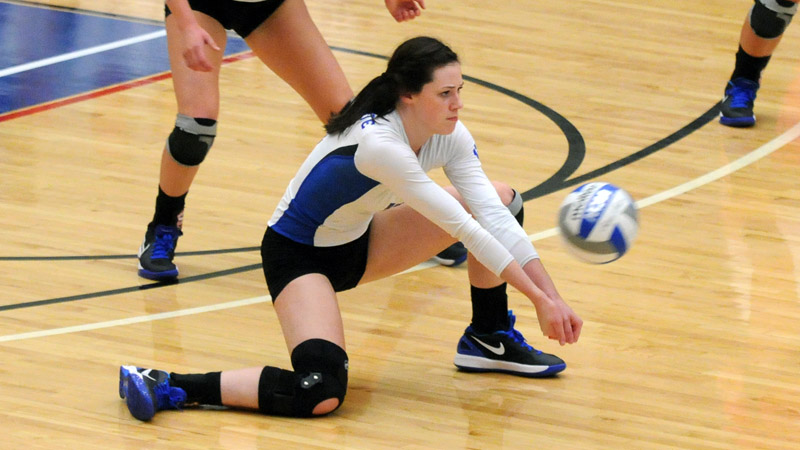
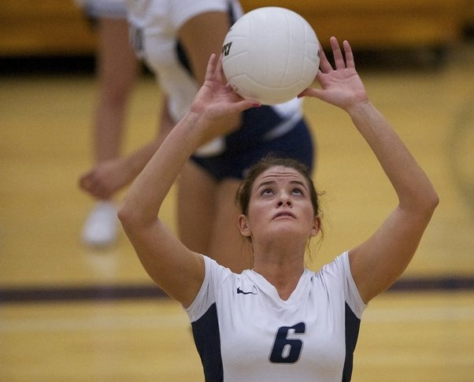

Passing
Here is everything you need to know about volleyball!
Volleyball is a sport for both men and women, that has a maximum of six players playing at a time.
How it's done:
- Passing can either be a form of defense, or a form of offense
- Usually, it's done on the same side of the net, and more times than not, it is defense


The basics: Defense and offense
- Defensively, it is done when the opposing team attacks the ball, and the defenders passing the ball have to keep the ball from hitting the ground
- Offensively, it is either overhead passing to set to a hitter, or sending the ball over with a pass when there is no option for an offensive attack
Click here for Home Page
Click here for Page 3
Click here for Page 4